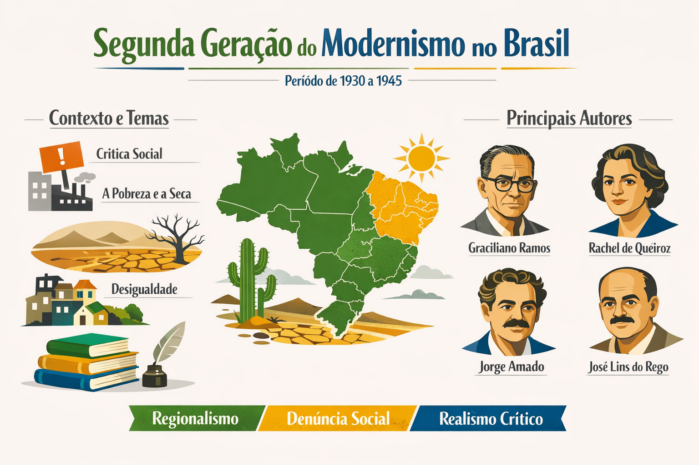

Segunda Geração do Modernismo no Brasil (1930–1945): contexto, características e autores
A Segunda Geração do Modernismo no Brasil, também conhecida como fase de consolidação, desenvolveu-se entre 1930 e 1945 e representou um momento de amadurecimento das propostas iniciadas na primeira fase modernista. Nesse período, a literatura brasileira passou a apresentar maior profundidade temática, linguagem mais equilibrada e forte preocupação social.

Contexto histórico da Segunda Geração Modernista
A Segunda Geração do Modernismo surge em um cenário marcado por profundas transformações políticas, sociais e econômicas no Brasil e no mundo. Entre os principais acontecimentos, destacam-se:
- A crise de 1929 e seus impactos econômicos;
- A Revolução de 1930, que levou Getúlio Vargas ao poder;
- O avanço da industrialização brasileira;
- O crescimento das desigualdades sociais;
- O período do Estado Novo (1937–1945).
Esse contexto contribuiu para o surgimento de uma literatura mais crítica, voltada para a análise da realidade social brasileira.
Principais características da Segunda Geração do Modernismo
Diferente da fase inicial, marcada pela ruptura e experimentação, a segunda geração apresenta maior equilíbrio estético e aprofundamento dos temas. Entre suas principais características, destacam-se:
- Regionalismo: valorização das diferentes regiões do Brasil, especialmente o Nordeste;
- Temática social: denúncia das desigualdades, pobreza e injustiças sociais;
- Prosa mais estruturada: linguagem clara, porém elaborada;
- Psicologismo: análise profunda dos conflitos internos das personagens;
- Universalismo: abordagem de temas humanos universais, como dor, morte e solidão.
Prosa de 30: o romance regionalista
A prosa da Segunda Geração modernista ficou conhecida como Romance de 30. Esse tipo de narrativa apresenta forte crítica social e retrata a realidade brasileira, principalmente a vida no campo e nas regiões mais pobres.
Os autores desse período buscavam expor problemas como a seca, a miséria, a exploração do trabalhador e as desigualdades sociais, com destaque para o Nordeste brasileiro.
Principais autores da prosa
- Graciliano Ramos — autor de obras como Vidas Secas;
- Jorge Amado — conhecido por retratar o povo baiano e suas lutas sociais;
- José Lins do Rego — destacou-se com o ciclo da cana-de-açúcar;
- Rachel de Queiroz — autora de O Quinze, obra marcante sobre a seca;
- Érico Veríssimo — explorou aspectos históricos e sociais do sul do Brasil.
Poesia da Segunda Geração Modernista
Na poesia, essa fase também apresenta maior maturidade em relação à primeira geração. Os poetas exploram tanto questões sociais quanto existenciais, com linguagem mais equilibrada e profunda.
Principais características da poesia
- Equilíbrio entre forma e conteúdo;
- Reflexões existenciais e filosóficas;
- Uso de linguagem mais elaborada;
- Presença de temas sociais;
- Maior rigor estético.
Principais poetas
- Carlos Drummond de Andrade — um dos maiores nomes da poesia brasileira;
- Cecília Meireles — conhecida por sua poesia lírica e introspectiva;
- Murilo Mendes — com influências do surrealismo;
- Jorge de Lima — com poesia de forte carga religiosa e social.
Diferença entre a 1ª e a 2ª geração do Modernismo
| Aspecto | 1ª Geração | 2ª Geração |
|---|---|---|
| Período | 1922–1930 | 1930–1945 |
| Foco | Ruptura estética | Consolidação e aprofundamento |
| Linguagem | Experimental | Mais equilibrada |
| Temas | Nacionalismo e inovação | Questões sociais e existenciais |
Importância da Segunda Geração do Modernismo
A Segunda Geração do Modernismo foi fundamental para consolidar a literatura brasileira como instrumento de análise social e expressão artística madura. Os autores desse período contribuíram para a construção de uma identidade literária nacional mais crítica e consciente.
Além disso, muitas obras produzidas nessa fase são consideradas clássicos da literatura brasileira e continuam sendo amplamente estudadas até hoje.
Conclusão
A Segunda Geração do Modernismo no Brasil representa um momento de amadurecimento estético e aprofundamento temático. Com forte presença de crítica social, regionalismo e análise psicológica, essa fase consolidou os ideais modernistas e deixou um legado duradouro na literatura nacional.
Explore Outros Conteúdos
Continue seus estudos acessando outras seções do site Mestre Kira: